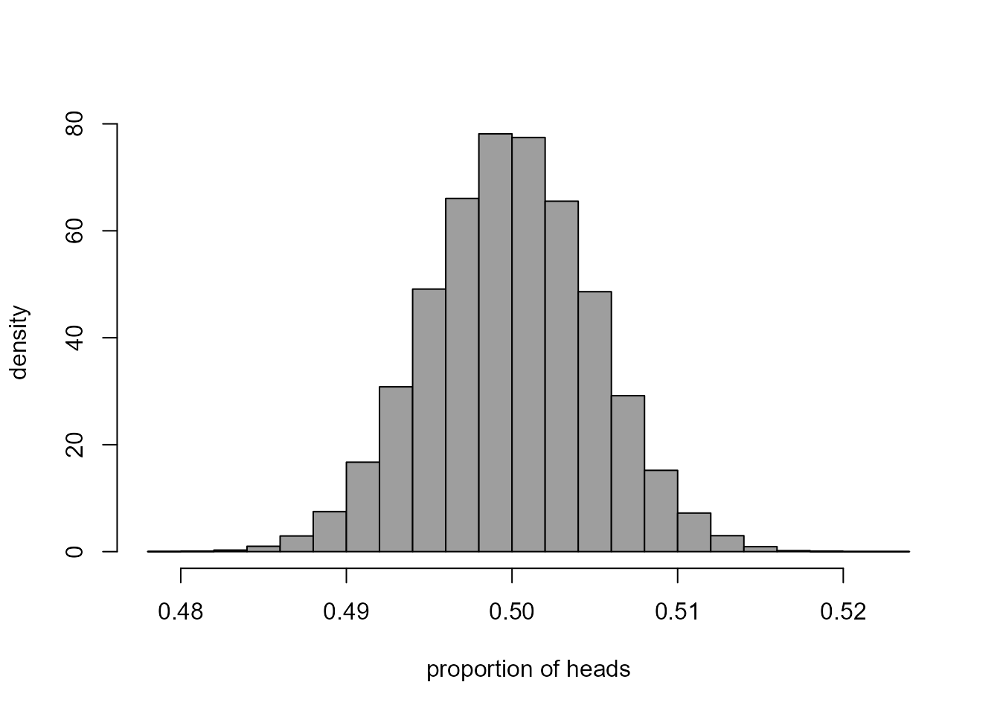
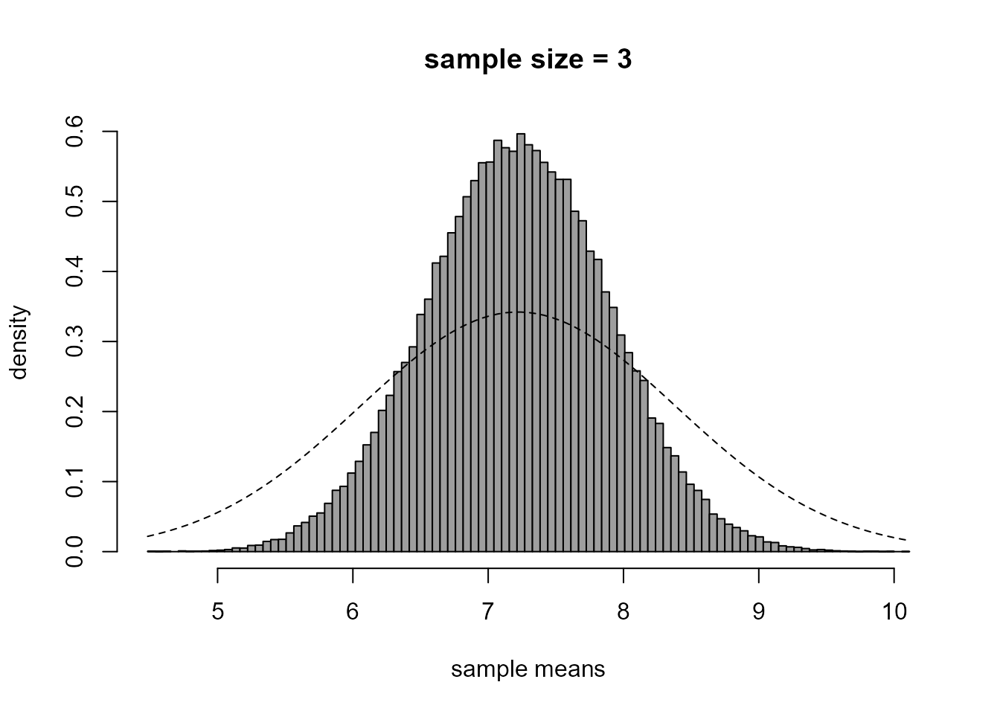
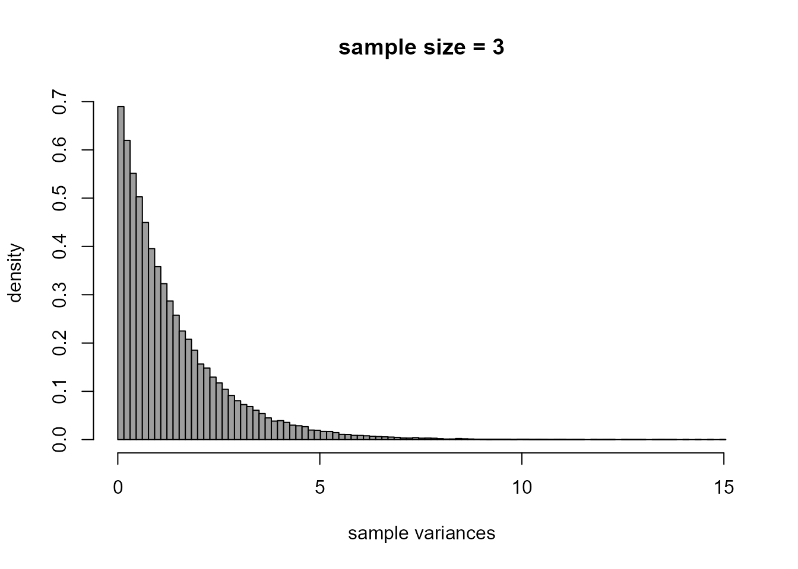

Chapter 7: Statistical Inference
Paul Northrop
Source:vignettes/stat0002-ch7-statistical-inference-vignette.Rmd
stat0002-ch7-statistical-inference-vignette.RmdThis vignette provides some R code that is related to some of the content of Chapter 7 of the STAT0002 notes, namely to Statistical Inference.
Coin-tossing example
This section relates to Section 7.5.1 of the notes.
We calculate from the Kerrich’s coin data an estimate \(\hat{p}\) of the probability that the coin lands with the heads side up when he tosses it.
> library(stat0002)
> phat <- kerrich[nrow(kerrich), "heads"] / kerrich[nrow(kerrich), "throws"]
> phat
[1] 0.5067We produce a plot like Figure 7.2. The idea is to repeat Kerrich’s 10,000 coin-toss experiment a large number (100,000) times. These experiments are not real: they are computer simulations. The simulations are based on the assumption that the value of \(p\) is \(1/2\). If this is the case then the number of heads obtained in one experiment (of 10,000 simulated tosses of the coin) has a binomial(\(10,000, 1/2\)) distribution.
> # Set the same random number seed that was used to create Figure 7.2
> # If we change the value of seed then we will obtain a slightly different plot
> set.seed(37)
> # Number of simulated experiments
> nsimulations <- 100000
> # Number of coin tosses on each experiment
> ntosses <- 10000
> # Simulate nsimulations (=100,000) times from a binomial(10,000, 1/2) distribution
> # This produces a vector nheads of length nsimulations (=100,000)
> # Divide each value in nhead by ntosses (=10,000) to produce estimates of p
> nheads <- rbinom(nsimulations, size = ntosses, p = 1 / 2) / ntosses
> # Plot a histogram
> hist(nheads, prob = TRUE, col = 8, xlab = "proportion of heads", ylab = "density", main = "")
This histogram describes the sampling distribution of the estimator \(\hat{p}\) of \(p\) for Kerrich’s experiment under the assumption that \(p = 1/2\). We could use the simulated values of \(\hat{p}\) to help us to judge whether we are surprised that Kerrich’s data produced an estimate of 0.5067. For example, we might want to calculate the proportion of simulated values of \(\hat{p}\) that are greater than \(0.5067\) or the proportion that are either greater than \(0.5067\) or less than \(1 - 0.5067 = 0.4933\). The following code does this. Can you see how it works?
Estimating the parameters of a normal distribution
This section relates to Section
7.5.2 of the notes. We provide code that produces plots like those
in Figure 7.3. For details please see the notes. You can change the
value of n to investigate the effect of changing the sample
size \(n\).
> set.seed(37)
> # Set values of mean and standard deviation
> mu <- 7.22
> sigma <- sqrt(1.36)
> # Set the sample size n
> n <- 3
> # The number of simulated datasets of size n to produce
> nsim <- 100000
> # Simulate, producing a matrix with nsim columns and n rows
> # Each column contains a simulated sample of size n
> x <- matrix(rnorm(nsim * n, mean = mu, sd = sigma), ncol = nsim, nrow = n)
> # Calculate the sample means and sample variances of each of the nsim samples
> xbars <- colMeans(x)
> xvars <- apply(x,2,var)The following code produces the plots.
> # Histogram of sample means
> br <- seq(from = min(xbars), to = max(xbars), len = 100)
> hist(xbars, prob = TRUE, breaks = br, col = 8, xlab = "sample means", ylab = "density", main = "")
> title(paste0("sample size = ", n))
> curve(dnorm(x, mean = mu, sd = sigma), lty = 2, add = TRUE)
> # Histogram of sample variances
> br <- seq(from = min(xvars), to = max(xvars), len = 100)
> hist(xvars, prob = TRUE, breaks = br, col = 8, xlab = "sample variances", ylab = "density", main = "")
> title(paste0("sample size = ", n))
Assessing goodness-of-fit
We calculate the values that appear in Table 7.1 of the notes. Firstly, we calculate the observed frequencies, which appear in the first row of the table. I have made two attempts at tabulating the numbers of births in each hour. Can you see why the first attempt is not correct? Can you see how the second attempt corrects this?
> # Hour of birth
> birth_hour <- floor(aussie_births$time / 60) + 1
> # Tabulate the number of births in each hour, attempt 1
> table(birth_hour)
birth_hour
1 2 3 5 8 9 10 11 12 13 14 15 16 17 18 19 20 21 22 23 24
1 3 1 4 2 2 1 3 1 2 1 4 1 2 1 3 4 3 2 1 2
> # Tabulate the number of births in each hour, attempt 2
> add_a_birth_in_each_hour <- 1:max(birth_hour)
> births_each_hour <- table(c(birth_hour, add_a_birth_in_each_hour)) - 1
> births_each_hour
1 2 3 4 5 6 7 8 9 10 11 12 13 14 15 16 17 18 19 20 21 22 23 24
1 3 1 0 4 0 0 2 2 1 3 1 2 1 4 1 2 1 3 4 3 2 1 2
> # Check that we have 44 births
> sum(births_each_hour)
[1] 44
> # Find the observed frequencies
> observed <- table(births_each_hour)
> # Add the 5+ category, with frequency 0
> observed <- c(observed, 0)
> names(observed)[length(observed)] <- "5+"
> observed
0 1 2 3 4 5+
3 8 6 4 3 0 Now, we estimate the rate \(\lambda\) of the assumed Poisson process of births.
Finally, we calculate the estimated expected frequencies and the residuals then print the middle part of Table 7.1, rounding the values to 1 decimal place.
> nbirths <- 0:max(births_each_hour)
> estimated_expected <- dpois(nbirths, lambda = lambda_hat) * 24
> estimated_expected <- c(estimated_expected, 24 - sum(estimated_expected))
> estimated_expected
[1] 3.8371139 7.0347088 6.4484831 3.9407397 1.8061723 0.9327822
> resids <- observed - estimated_expected
> round(rbind(observed, estimated_expected, resids), 1)
0 1 2 3 4 5+
observed 3.0 8 6.0 4.0 3.0 0.0
estimated_expected 3.8 7 6.4 3.9 1.8 0.9
resids -0.8 1 -0.4 0.1 1.2 -0.9